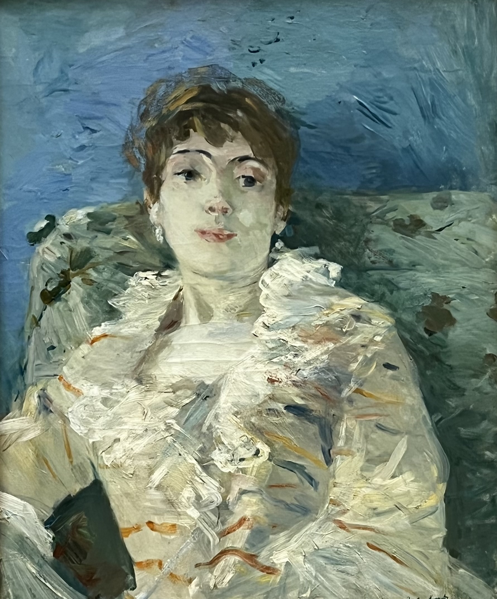
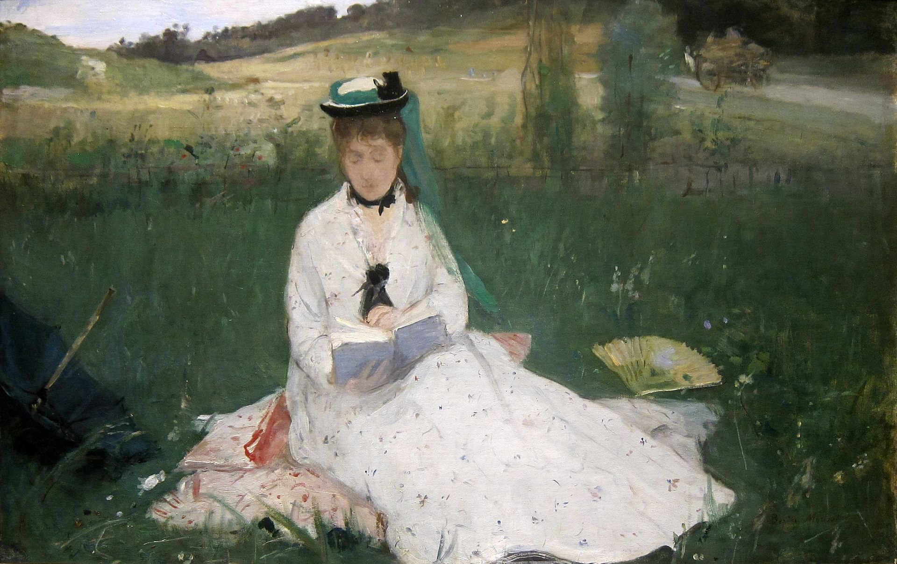
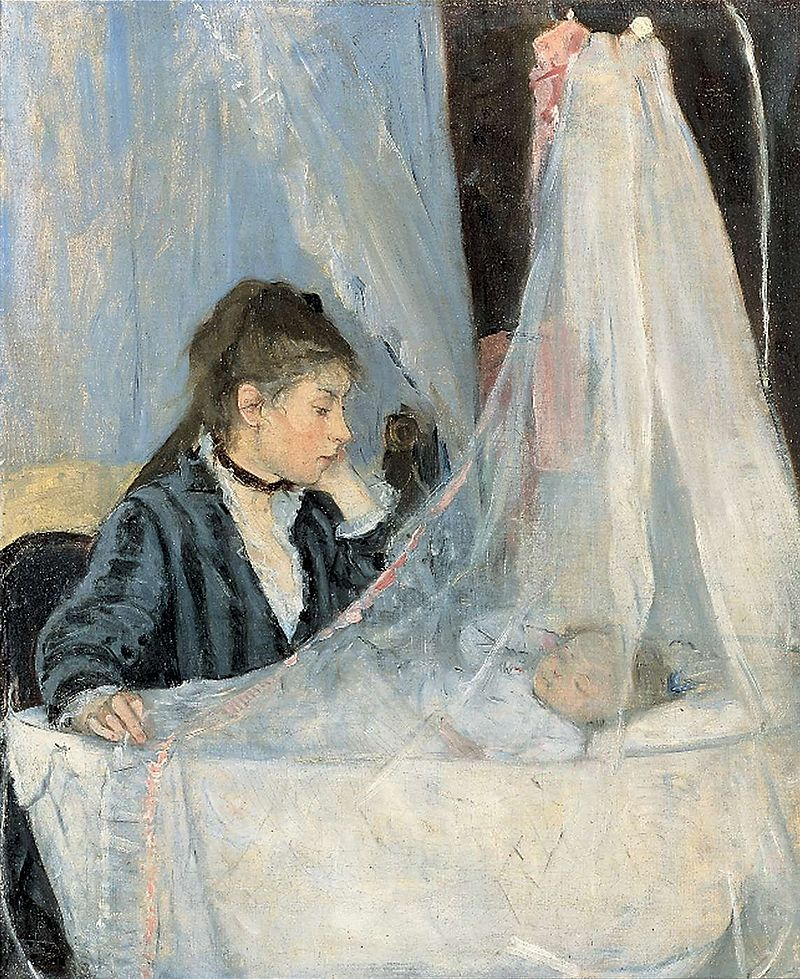

Girl on Divan
1885

L'ombrelle verte
1873

Berthe Morisot war eine französische impressionistische Malerin. Sie beschäftigte sich mit häuslichen und alltäglichen Dingen. Sie stellte das Leben als Frau im XIX. Jahrhundert dar.
Zurück